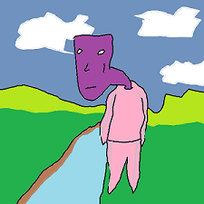

Oi you
Spoon the prune. It's a website. On here you'll find some things that I and other people have made. The basic plan is; millions of people will travel here everyday and in the future I'll sneak adverts on so that much money is made. Then I'll never have to work because working is effort. So come on, tell your friends and search for stuff.
 Honestly, theres not much on here at the moment but you know.
 Harambe
Harambe
This legendary gorilla has been recently shot for looking after a poor little child who had fallen
into his enclosure. Gone but never forgotten. #DiksOut